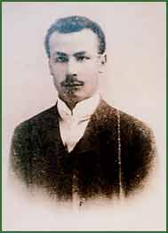

|  | |||
| József Patai was the editor of Múlt és Jövő (Past and Future, 1911–1944), a literary, artistic periodical which brought its readers closer to Jewish cultural traditions and Zionist ideas. After his first trip to Palestine, he founded the Pro-Palestine Alliance of Hungarian Jews (1926). He made aliyah in 1940. | |||